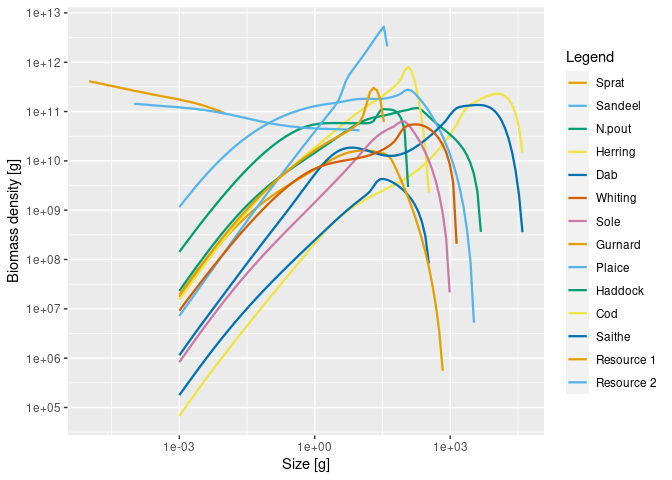

This extension package for mizer allows you to work with multiple size-structured background resources in the same way in which you work with multiple species in mizer. Modelled species can have different preferences for different resources, defined though maximum availability of resource available to species, in a similar way as setting species interaction matrix. Each background resource can have different minimum and maximum sizes, and different size spectrum slopes (lambda) or abundances (kappa). This allows the user to reproduce emergent onto-genetic dietary shifts, where a species feed in a plankton spectrum when it is small, then switches to benthic spectrum, and later to other fish species. It uses mizer’s extension chain for its projection-rate hooks, so models with multiple resources can be composed with other extension packages such as therMizer.
Installation
remotes::install_github("sizespectrum/mizerMR")
library(mizerMR)Setting up a model with multiple resources
Multiple size-structured resources are set up in a very similar manner to multiple species. Just as for multiple species we need a species_params data frame with the information about the species, for multiple resources we need a resource_params data frame, with one row for each resource. Here is an artificial example with two resources:
library(tibble)
resource_params <- tribble(
~resource, ~kappa, ~lambda, ~r_pp, ~w_min, ~w_max,
"Resource 1", 1e11, 2.13, 4, NA , 0.01,
"Resource 2", 1e11, 2.05, 10, 1e-4, NA
)Similarly to how we can set resource parameters for a single resource in standard mizer with setResource(), you can now set multiple resources with setMultipleResources(). So if for example we wanted to add these resources to the North Sea model described by the NS_params MizerParams object, we would do
params <- setMultipleResources(NS_params, resource_params)This has given us a new MizerParams object in which the original resource has been replaced by our two resources. We can then work with this MizerParams object as usual. For example we can project it forward in time:
sim <- project(params, t_max = 2, t_save = 0.2)and plot the resulting spectra:
plotSpectra(sim, power = 2)
We can also animate the spectra with animateSpectra(sim). Most mizer functions will work as usual.
We can access the simulation results for the resource with NResource(). This gives a three-dimensional array:
str(NResource(sim))
#> num [1:11, 1:2, 1:226] 9.87e+37 9.87e+37 9.87e+37 9.87e+37 9.87e+37 ...
#> - attr(*, "dimnames")=List of 3
#> ..$ time : chr [1:11] "0" "0.2" "0.4" "0.6" ...
#> ..$ resource: chr [1:2] "Resource 1" "Resource 2"
#> ..$ w : chr [1:226] "2.12e-13" "2.53e-13" "3.02e-13" "3.61e-13" ...So the first dimension is the time, the second the resource and the third the size. Thus to get the abundance density of Resource 2 at time 0.6 at sizes between 0.1g and 5g we could do
select_w <- w_full(params) >= 1 & w_full(params) <= 5
NResource(sim)["0.6", "Resource 2", select_w]
#> 1.18 1.4 1.68 2 2.39 2.85
#> 29171099375 20197414266 14020889066 9759285393 6811166565 4765970415
#> 3.4 4.06 4.84
#> 3342985300 2349927216 1654807045This is perfectly analogous to how we would access the abundance density of fish species, except that the range of sizes is given by w_full rather than by w.
More details
Just as we are able to specify how strongly a predator species interacts with a prey species via the interaction matrix, we can also specify how strongly a predator species interacts with each resource via the resource_interaction, which is a matrix with one row for each species and one column for each resource. For example
resource_interaction <- matrix(runif(24), nrow = 12, ncol = 2)
params <- setMultipleResources(NS_params, resource_params, resource_interaction)Resource parameters can be changed at any time. For example we can double the carrying capacity of the first resource with
resource_params(params)$kappa[1] <- 2 * resource_params(params)$kappa[1]We can also use this kind of notation as an alternative to setMultispeciesParams(). For example
params <- NS_params
resource_params(params) <- resource_params
resource_interaction(params) <- resource_interactionBy default the initial values for the resources will be equal to the carrying capacities. But if a user has their own array (resource x size) of resource number densities my_n_resource they can set these as the initial values with
initialNResource(params) <- my_n_resourceUsers who are not happy with the allometric expressions for the resource carrying capacities or the replenishment rates but have created their own matrices my_capacity and my_rate with one row for each resource and one column for each size can set these with
resource_capacity(params) <- my_capacity
resource_rate(params) <- my_rateRather than adding the multiple resources to an existing model, the user can also create a new model with multiple resources with
params <- newMRParams(species_params, interaction, resource_params,
resource_interaction, gear_params)